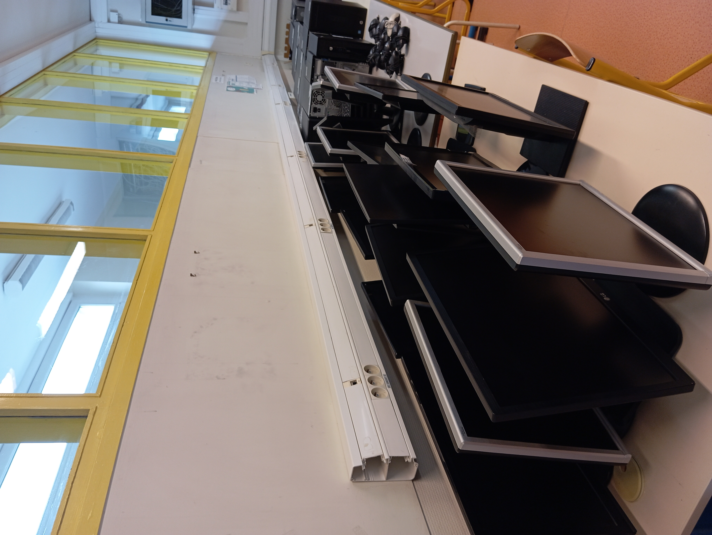

Missions effectuées à l'Espace Numérique de Meudon

1. Débranchement et organisation des PC pour recyclage
Objectif : Préparer les PC obsolètes pour le recyclage en les organisant et en installant Windows 11 sur ceux pouvant encore être utilisés.
Tâches réalisées :
- Débranchement et tri des unités centrales, écrans et périphériques.
- Vérification de l'état des composants pour une éventuelle réutilisation.
- Installation de Windows 11 sur les PC encore fonctionnels.
- Étiquetage et rangement des équipements.
2. Déploiement et administration du serveur GLPI
Objectif : Mettre en place un outil de gestion du parc informatique et des interventions.
Tâches réalisées :
- Installation et configuration de GLPI sur un serveur dédié.
- Création des utilisateurs et gestion des droits d'accès.
- Ajout des équipements informatiques et des logiciels dans la base de données.
- Test et validation du bon fonctionnement du serveur GLPI.
3. Mise en place du serveur dans la baie
Objectif : Installer et câbler un serveur dans la baie réseau pour optimiser la gestion des infrastructures IT.
Tâches réalisées :
- Montage du serveur dans le rack.
- Brassage et connexion des câbles réseau.
- Vérification de la connectivité et test des services hébergés.
4. Livraison et mise en réseau des valises de tablettes dans les écoles
Objectif : Déployer des valises de tablettes connectées pour les établissements scolaires.
Tâches réalisées :
- Livraison et installation des valises de tablettes.
- Connexion des tablettes au réseau Wi-Fi des écoles.
- Installation et activation du logiciel Reflector avec licences.
- Tests de connexion et démonstration aux enseignants.
5. Dépannage pour les professeurs et particuliers
Objectif : Assister les enseignants et visiteurs de l’Espace Numérique pour résoudre leurs problèmes techniques.
Tâches réalisées :
- Diagnostic et réparation d’ordinateurs et imprimantes.
- Installation et mise à jour de logiciels.
- Assistance et conseils aux utilisateurs.
6. Brassage réseau et Masterisation de nouveau poste
Objectif : Préparer un PC pour une utilisation standardisée dans l’infrastructure.
Tâches réalisées :
- Brassage des câbles réseau pour assurer une connectivité optimale.
- Installation du système d’exploitation et des drivers.
- Configuration des logiciels requis.
- Vérification du bon fonctionnement.
Conclusion
Ces interventions ont permis d’optimiser la gestion du matériel informatique, d’assurer le bon fonctionnement des infrastructures et d’améliorer le support technique aux écoles et particuliers. Cette expérience m’a permis de développer mes compétences en administration système, en réseau et en support utilisateur.